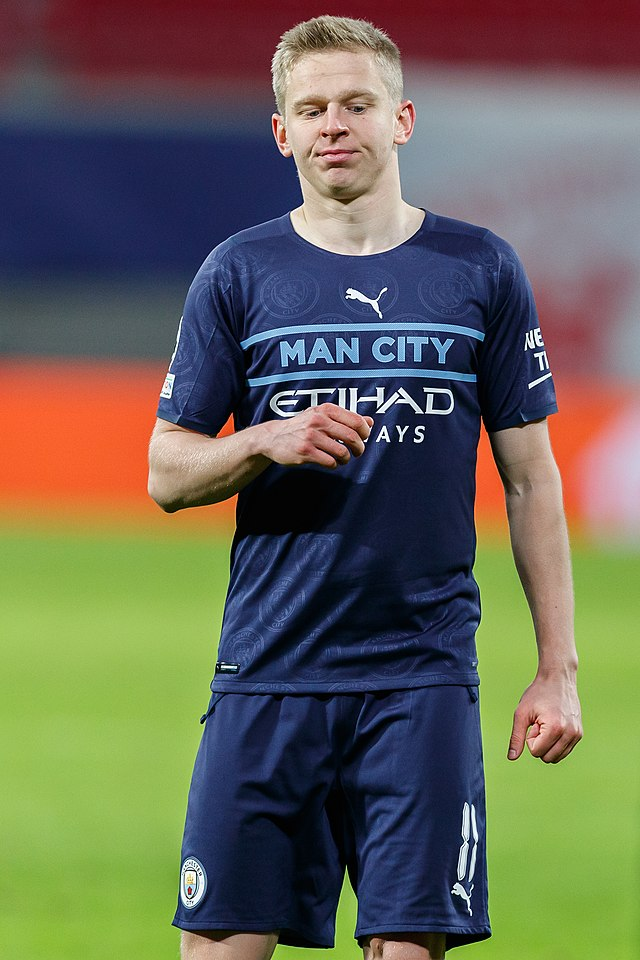
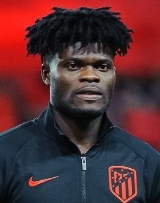
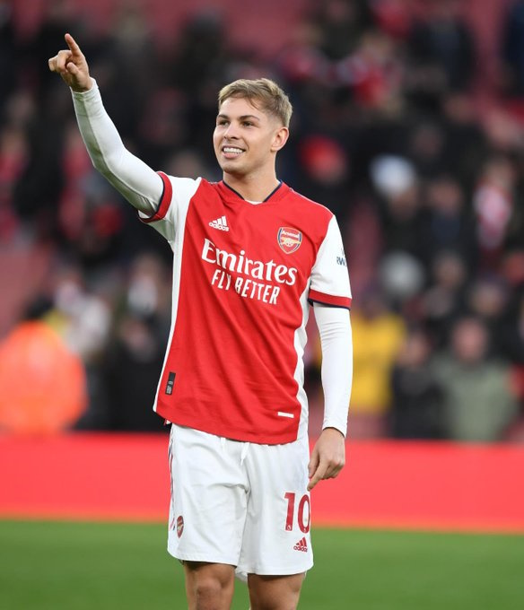
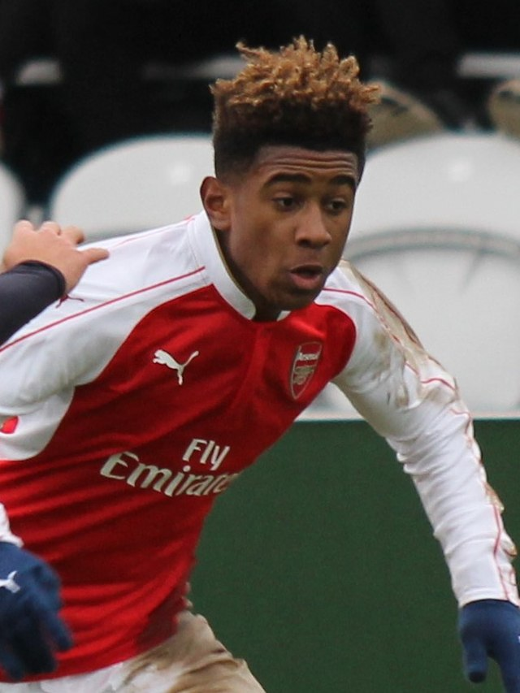
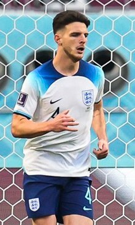
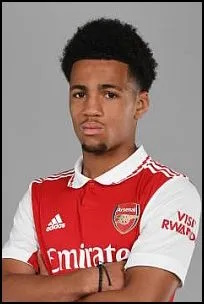
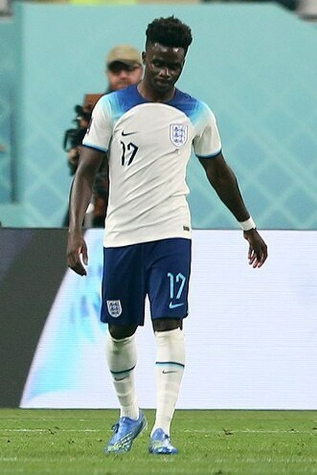

アーセナル選手一覧
▼GK
- アーロン・ラムズデール（Aaron Ramsdale）

- ダビド・ラヤ（David Raya）

▼DF
- ウィリアン・サリバ（William Saliba）

- ベン・ホワイト（Benjamin White）

- ガブリエル・マガリャンイス（Gabriel Magalhães）

- ユリエン・ティンバー（Jurriën Timber）

- ヤクブ・キビオル（Jakub Kiwior）

- セドリック・ソアレス（Cédric Soares）

- 冨安健洋（とみやす たけひろ）

- オレクサンドル・ジンチェンコ（Oleksandr Zinchenko）

▼MF
- トーマス・パーティ（Thomas Teye Partey）

- マルティン・ウーデゴーア（Martin Ødegaard）

- エミール・スミス・ロウ（Emile Smith Rowe）

- ジョルジーニョ（Jorginho）

- ファビオ・ビエイラ（Fábio Daniel Ferreira Vieira）

- リース・ネルソン（Reiss Luke Nelson）

- モハメド・エルネニー（Mohamed Naser Elsayed Elneny）

- カイ・ハバーツ（Kai Lukas Havertz）

- デクラン・ライス（Declan Rice）

- イーサン・ヌワネリ（Ethan Chidiebere Nwaneri）

▼FW
- ブカヨ・サカ（Bukayo Saka）

- ガブリエル・ジェズス（Gabriel Jesus）

- ガブリエル・マルティネッリ（Gabriel Martinelli）

- エディ・エンケティア（Edward Nketiah）

- レアンドロ・トロサール（Leandro Trossard）